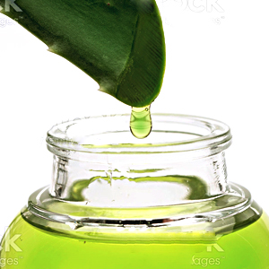

2 Causes of Heartburn & Acid Reflux Most Doctors Ignore
If you suffer from heartburn or acid reflux, here's important news:
New research shows that your problems may be caused by two hidden triggers that the "solutions" most doctors recommend fail to address.
You see, most heartburn remedies only treat your symptoms. They do nothing to address the underlying cause of acid reflux.
It's like getting a shot of Novocain for a tooth cavity. It can blunt the pain for a while, but if the cavity isn't treated, the pain comes right ack as soon as the Novocain wears off.
It's the same with acid reflux. If you don't fix what's causing the problems, your symptoms will keep coming back.
And while you would never consider getting a daily shot of Novocain to ease your dental discomfort, Americans will fill over 170 million prescriptions for acid blockers this year[1]— taking them day after day.
But what you may not know is that the most popular of these acid-blocking medications, proton pump inhibitors (PPIs), carry an FDA warning that they should not be used for more than 14 consecutive days or more than 42 total days over the course of a year.[2]
Yet doctors and patients frequently ignore this warning, risking severe consequences to ease the discomfort.
I'm Joshua Corn, Editor-in-Chief of Live in the Now, one of the fastest-growing natural health publications in the nation. My passion for natural health has always driven me to educate people on alternative solutions that are both safe and effective. Please keep reading because today I'm going to show you how to quickly and safely relieve your heartburn and reflux issues by combatting the true causes that, unfortunately, too many doctors overlook.
The Shocking Dangers of Acid-Blocking PPIs
The primary purpose of most heartburn remedies is to block stomach acid in the digestive tract, often by inhibiting proton pump cells from producing this acid. And they usually do this quite effectively.
But stomach acid is essential for the proper absorption of vital nutrients to maintain overall health. Low levels of stomach acid and the use of PPIs have been linked to:
-
Immune system impairment
due to an altered gut environment[3] -
Low absorption of essential nutrients such as vitamin B12, calcium, iron and magnesium[4,5,6]
-
Increased risk of serious cardiovascular
issues[7] -
Increased risk of serious kidney and renal issues[8]
-
Negative effects on cognitive function and brain health[9,10]
Hidden Heartburn Trigger #1: Your Acid Level Isn't Too High, It's Too LOW!
For years we've been told that high levels of stomach acid are what causes heartburn. It makes sense, since acid refluxing from the upper stomach into the esophagus is what causes our symptoms, right?
Well, there's just one problem with this commonly held theory: It's not true!
And, as I just mentioned, blocking stomach acid can trigger all sorts of damaging health issues.
-
fact
Stomach acid is absolutely VITAL for our digestion and our health. Stomach acid helps us break down and absorb the foods we eat. Without adequate acid levels, foods aren't digested properly, which creates the gas and bloating that can cause acid to reflux up into the esophagus.
-
fact
As we get older, acid levels fall, BUT heartburn increases. When we're younger, we produce almost 200 milligrams of stomach acid every hour. But as we get older, we produce less and less. In his book, Why Stomach Acid Is Good for You, Jonathan V. Wright, M.D., reveals what he's found in 24 years of treating patients with acid reflux and other symptoms...
When we carefully test people over age 40 who're having heartburn, indigestion and gas, over 90 percent of the time we find inadequate acid production by the stomach.
-
fact
Low stomach acid creates the perfect environment for bugs and bacteria. Your digestive system and your esophagus are home to many forms of bacteria. But your stomach is sterile. Reason: Bugs and bacteria ingested from foods are quickly seized upon and destroyed by stomach acid. But when acid levels fall, bugs and bacteria can invade the stomach, causing digestive problems and other health issues.
-
fact
If high acid levels were the cause, then acid reflux would be a young person's affliction. We produce more acid in our 20s than in our 40s. If high acid were the cause, it would be confined to people in their teens and 20s. But it's not. Today, more than 20 million Americans over the age of 40 spend more than $14 billion every year on acid-blocking medications.[11]
I'll never understand why traditional medicine's popular "solutions" ignore every single one of these facts. And in a minute, I'll show you how to safely and effectively get healthy, balanced acid levels. But right now, let me tell you about the second hidden cause behind reflux and heartburn...
Hidden Heartburn Trigger #2: Inflammatory Fires in Your Digestive Tract
As a health conscious person, you are probably familiar with inflammation. At its best, inflammation is simply your body's healthy and natural response to injury or infection. But the problem with inflammation arises when it stays elevated for prolonged periods of time. When that happens, it can wreak havoc on your health—especially in your digestive system.
Throughout your stomach and esophagus—and indeed your entire digestive tract—lives a protective layer of mucus. This mucus acts like a shield between your stomach lining and stomach acid. But in many people with acid reflux, this protective mucus has been drastically compromised.
As this protective mucus lining becomes eroded through prolonged inflammation, gas, tiny food particles and acid are pushed farther up in the stomach into the diaphragm and ultimately reflux up into the esophagus. Once there, you get burning acid in your throat, heartburn, indigestion and misery.
The fact is, PPIs simply don't address the low stomach acid levels and inflammation that are so often at the root of acid reflux. But here's the good news you've been waiting for...
Combatting Heartburn and Acid Reflux with 3 Proven Natural Solutions
You don't have to rely on the frequently recommended "solutions" to get relief from the discomfort that makes you miserable and keeps you up at night.
Research has shown that three natural ingredients have remarkable effectiveness in relieving heartburn and acid reflux, while helping soothe inflammation in the mucosal lining of the stomach and gastrointestinal tract. The results are fast, the benefits long lasting, and most important, you'll experience no side effects whatsoever!
-
Acid Relief Solution #1
DGL: The Licorice Soother
You might be familiar with licorice as a sweet flavoring agent, but licorice also has a long history of use as a soother of digestive discomfort associated with heartburn and acid reflux. And there's a special preparation of licorice called deglycyrrhizinated licorice, or DGL for short, that is extremely effective at this.
Multiple scientific studies have shown that DGL has the ability to restore the integrity of the esophageal, stomach and intestinal lining by increasing the secretion of protective mucus that lines the gastrointestinal tract. This lining is a key component of the stomach's defense against the erosive properties of acid.
One double-blind study compared the benefits of DGL to the conventional approach and found that it was equally effective at reducing the uncomfortable symptoms when evaluated at both 6 and 12 weeks of use.[12]
More importantly, other clinical trials have demonstrated the benefits of DGL for supporting the integrity of the stomach lining.[13]
In addition, research on a specific form of DGL, called GutGuard®, has shown it can also help with functional dyspepsia, or discomfort in the upper belly or abdomen occurring during or right after eating.[14]
The bottom line: DGL can help boost the mucosal lining of the stomach, thereby reducing damage, preventing inflammation and curbing symptoms. That's why I recommend DGL to anyone with reflux, heartburn or other symptoms of indigestion.
-
Acid Relief Solution #2
Soothing Aloe Vera
Aloe vera was dubbed the "plant of immortality" by the ancient Egyptians. This soothing gel contains powerful anti-inflammatory compounds that have been used for decades to relieve the stinging from sunburn and other burns. And when it comes to reflux and heartburn, aloe vera offers many terrific benefits.
-
It helps combat the inflammatory fires in your stomach that can lead to pain, bloating, burning and reflux.
-
It helps stimulate better digestion, and the better you're able to digest the foods you eat, the less gas, bloating, reflux and heartburn you get.
In one study, researchers found that aloe improved intestinal motility, thereby speeding up bowel emptying. At the end of the study, participants reported less bloating after meals and reduced flatulence.[15]
In another double-blind, placebo-controlled study, researchers tested aloe for its inflammatory response in the intestines. The result: Clinical researchers found that patients who took aloe for 4 weeks had measurable improvements in inflammatory factors with no side effects.[16]
Please note: The aloe plant can have some unwanted laxative effects, so it is extremely important to find an aloe product that has the latex portion removed to avoid this issue. ACTIValoe® is one such brand that I recommend.
-
-
Acid Relief Solution #3
The Healing Power of Slippery Elm
Slippery elm is an herb famous for its soothing properties. As the name implies, extracts of the bark of the slippery elm tree are often "slippery" producing copious amounts of compounds called polysaccharides.
These compounds are very similar in nature to the makeup of the mucus in your stomach and can augment your body's own mucus production, helping to protect the lining of the esophagus, stomach and intestines.[17]
The polysaccharides found in slippery elm can help promote a healthy inflammatory response in the stomach and intestines, making it a valuable ally for promoting healthy overall digestion in addition to helping with acid problems.[18]
My Personal Solution for Heartburn and Acid Indigestion
I encourage you to try one or more of the natural solutions I've described above. Many of my readers have reported best results when taking all three of these natural remedies. But in my research, I couldn't find them together anywhere.
That's when I set out to make an effective all-in-one solution that is convenient and affordable so everyone could get the relief they deserve.
In addition to my work with Live in the Now, I run Stop Aging Now, a company that has been proudly making premium-grade supplements for over 20 years.
Working with my Scientific Advisory Board, I developed AcidRelief360™ to provide a safe, effective, fast-acting, affordable and 100% natural solution for relieving heartburn and acid reflux.
AcidRelief360 is a breakthrough formula that is the first to combine DGL, aloe vera and slippery elm with two additional herbal digestive soothers, lemon balm and German chamomile, to provide powerful relief.
Simply take one small, easy-to-swallow pill after your morning and evening meals. And since it's priced as low as $12.45 per bottle, virtually anyone can take advantage of its amazing benefits.
I invite you to shop around and do your own research, but I'm convinced you'll find no better acid relief product out there at such an affordable price. Here's what makes AcidRelief360 superior:

75 mg of GutGuard® DGL: Deglycyrrhizinated licorice (DGL) helps to restore the integrity of the esophageal, stomach and intestinal lining by increasing the secretion of protective mucus. Research suggests GutGuard® DGL can also help with functional dyspepsia (discomfort in the upper belly or abdomen occurring during or right after eating).
50 mg of ACTIValoe® Aloe Vera: Aloe vera has been considered one of the top natural digestive products for years. ACTIValoe® is made using a patented process that removes the laxative properties of aloe and provides the polysaccharides you need to help soothe your digestive tract.
200 mg of Slippery Elm Bark: Slippery elm is an herb famous for its soothing properties. As the name implies, extracts of slippery elm are often slippery due to the high content of plant polysaccharides. These polysaccharides can help to soothe irritated internal tissue along the gastrointestinal tract.
50 mg of Lemon Balm: Traditionally used as far back as the Middle Ages, lemon balm is considered a calming herb that eases tension, as well as the discomfort of indigestion, including gas, nausea and bloating. In addition, lemon balm has the ability to relax smooth muscle, which means that it can help to relieve spasms of the digestive tract.[19]
150 mg of German Chamomile: Chamomile has been used as a natural digestive soother and mild herbal sedative for thousands of years, dating back to the ancient Egyptians, Romans and Greeks. The flowers of the chamomile plant contain compounds called mucilages, which have a soothing effect on the lining of the esophagus and other mucus membranes.[20]
Non-Habit Forming and Side Effect-Free: Unlike acid-blockers, the ingredients in AcidRelief360 do not cause rebound symptoms or any other side effects. And it doesn't interfere with any other medication.
Quality You Can Trust: AcidRelief360 is guaranteed to be safe and effective. It's made in Stop Aging Now's own FDA-inspected facility located in Florida to meet or exceed the stringent USP standards for quality, purity, potency and disintegration.
Try It Risk Free: AcidRelief360 comes with an "any reason" 365-day guarantee. That's right, you have a year to try it out, and return it for a full refund if it doesn't work for you.
Convenient and Affordable: Hate to take pills? No worries—AcidRelief360 requires only one small capsule twice per day. And through this special offer it's now available for as low as $12.45 per bottle. Plus it ships to you for free!
Here’s What People Are Saying About AcidRelief360
I get letters every day about the amazing benefits of AcidRelief360. Here are just a few of my favorites:
365-Day Money-Back Guarantee,
Try it Today—Risk–Free!
Hundreds of studies have documented the unbelievable health benefits of DGL, aloe vera and slippery elm. Now see what they can do for you with AcidRelief360. You'll feel the benefits faster than you ever thought possible because it:
- Rapid relief from painful burning in your chest and throat
- Reduced bloating, belching and abdominal discomfort
- A soothing effect on your stomach and better overall digestion
- Better sleep—no more propping your head up in bed!
- A stronger, more robust immune system
- More energy and an overall increased sense of vitality

Acidrelief360 limited-time offer
- Best value
- Great value
- Trial offer
This is NOT an automatic ship plan. No other charges will be made other than your initial order.